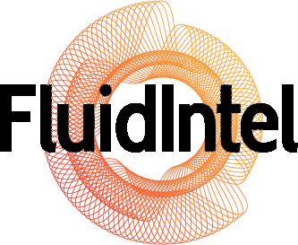

Software Engineer specialising in front end architecture and user experience. My core disciplines include web and mobile application development, responsive design and rapid prototyping.
I enjoy technical challenges and piecing together technologies that create good web experiences. I write a lot of native HTML, CSS and Javascript as well as using frameworks like AngularJS and Backbone. I also build native mobile apps primarily targeted at the Android platform.
Right now…
Working for the Commonwealth Bank exploring the future of customer and staff engagement models through rapid prototyping and design thinking. I am also exploring technology stacks and workflow patterns.
I recently collaborated on and built lifewithoutandy.com - a customised Wordpress site with a global fan base.
Please get in touch at raulfelixcarrizo@gmail.com to find out more about me.
Professional experience
Lead Front End Engineer/UX Specialist
Commonwealth Bank
Oct 2014 - present
The details of this work is sensitive but the nature of the work is to provide software development skills in mobile and web contexts as well as user experience guidance. In addition, I build prototypes that experiment with technologies and user interaction patterns which are then taken into production.
Technologies: AngularJS, Apache Cordova, Grunt, Javascript, Design thinking
Lead Front End Engineer
Commonwealth Bank - CommInsure
Aug 2014 - Nov 2014
Convert UI designs into static, functioning templates. Hand crafting HTML, Javascript and CSS. Managing the handover of assets and successful integration into a CQ5 content management system. I provide ongoing support to the team and assist in any way possible to resolve issues not understood by the core team. Browser support as far back as IE8 is achieved. Take a look at the CommInsure Adviser running in production.
Technologies: HTML5, CSS3, Javascript, PHP
Lead Front End Engineer
Working alongside award winning designer Jonny Brian, we implemented a mobile first, responsive Wordpress theme including many CMS customisations right down to hand crafted SQL queries. Integration with various social media platforms including Facebook and Instagram are included as well as galleries that work great on mobile. The customisations allow the boys to churn out content daily.
Technologies: Wordpress, PHP, HTML5, Javascript
Lead Front End Engineer
FluidIntel Pty Ltd
Aug 2013 - Oct 2014
Engineering company offering specialist solutions for fluid and hydrocarbon management in the mining and rail industry. A global company servicing Australia, Indonesia and Brazil.
Primary task was to re-architect the user interface for a number of in house applications and documents. This involved wireframing, web design and software development. User research and usability testing was undertaken to validate proposed changes.
I redefined the front end technology stack and put in place a system to rapidly build UI components. The refactor always ensured legacy clients were well supported down to IE8. I managed a team of 1 front end and 6 backend developers, sharing knowledge and ensuring a high standard of code was maintained through code reviews and testing.
Technologies: Ruby on Rails, Backbone.js, Highcharts.js, Sketch, Photoshop
Front End Engineer
Commonwealth Bank
May 2012 - Sep 2013
Working alongside specialist architects, build a design language and architect “themeable” apps to move assets into a new age of device agnostic environments as well as creating greater alliance between channels. This was a technology driven project the details of which are sensitive.
As a front end developer I was brought on for my knowledge of JavaScript, CSS3, HTML5 and Android. I took ownership of implementing the theming taxonomy and design patterns of the API. I often lead small groups of developers, sharing knowledge of best practices throughout these teams in the bank and working very closely with the UX lead.
Technologies: CSS3, JavaScript, HTML5, C# .NET, XML
Front End Engineer
Consulting for Microsoft on a government project my role was to transform the look and feel of a Sharepoint system.
Work included creating custom master and page layouts, developing CSS rules to override the myriad of Sharepoint styles for MySites and Portals as well as implementing additional JavaScript where required. The target browsers included IE7, IE8 and IE9. Functional parity was achieved in all areas.
Technologies: CSS3, JavaScript, Visual Studio, Sharepoint Designer
Front End Engineer
The Microsoft Development Platform Evangelists (DPE) Portal is an intranet site allowing members to share snippets of innovative material sourced from the internet amongst members of Microsoft Australia.
The content was to be presented in an engaging manner to supplement the innovative nature of the material. This was a single page application driven by Javascript. I consulted and managed all front end development integrating the use of AJAX, JavaScript, CSS3 and HTML5. The end result was a dynamic user interface demonstrating the power of the latest scripting and CSS techniques.
Technologies: HTML5, CSS3, JavaScript, JQuery, C# MVC3, Visual Studio
Consultant/Android developer
Object Consulting - cxTravel
Oct 2011 - Feb 2012
One of Australia's leaders in the delivery of enterprise business solutions through the innovative use of technologies such as Enterprise Java, .NET, Ruby and Salesforce as well as Open Source components.
Connected Experience is a product which integrates a number of technologies including the Microsoft Surface multi-touch screen (Samsung SUR40) as well as Windows, Android and iPhone mobile devices. As an Android developer I built the native experience which would communicate with the Microsoft Surface table to download and manage various types’ of media.
I was responsible for all aspects of Android development including the build process, development, testing and publication. The Android app works across a number of Android API levels spanning from version 2.2 up to the latest Jelly Bean 4.* versions. It also runs a various device sizes.
Technologies: IntelliJ IDEA, Java, Maven, Hudson, Google C2DM servers, JSON
Software Engineer
Intersect Australia
Jun 2009 - Sep 2011
Intersect Australia Ltd is a not-for-profit company limited by guarantee, established by its founding members to provide eResearch services and solutions.
The initial 6 months were spent in quality assurance for Java and Ruby on Rails applications before moving into a development role as a software engineer.
As an engineer I was responsible for various parts of web application development and touched on all areas of MVC with the Spring framework and Ruby on Rails.
Technologies: Ruby on Rails, Spring MVC, Selenium
Education
Certifications/Conferences
Skills breakdown
{[{ skill.area }]}
- {[{ item }]}
{[{ item.subtitle }]}
{[{ s }]}